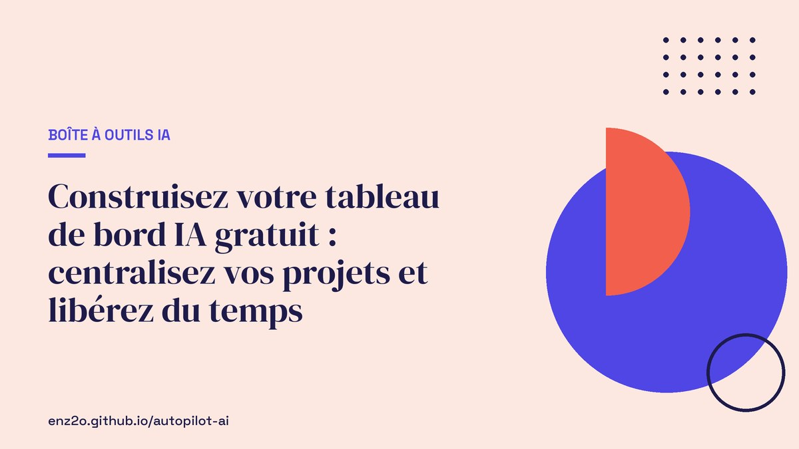
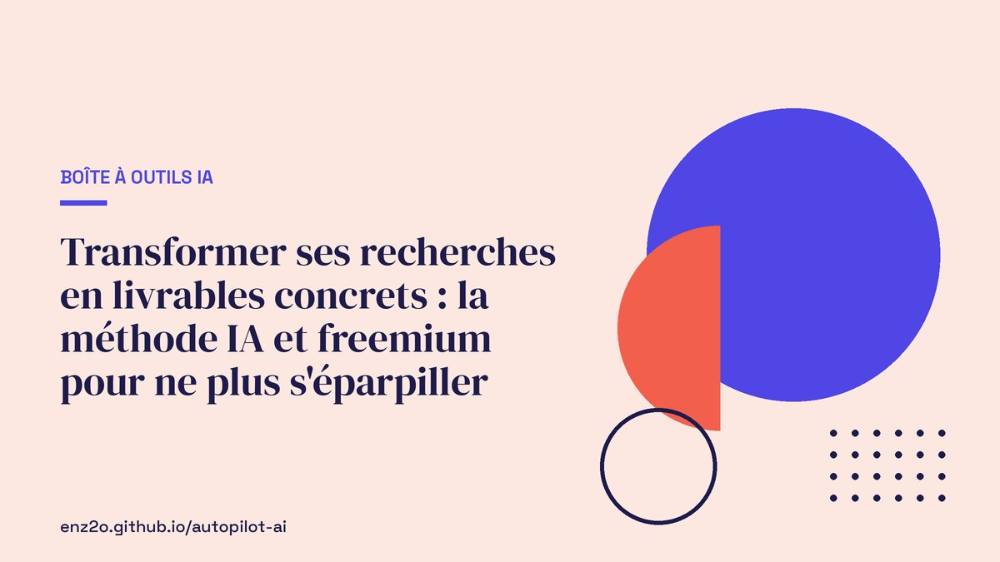
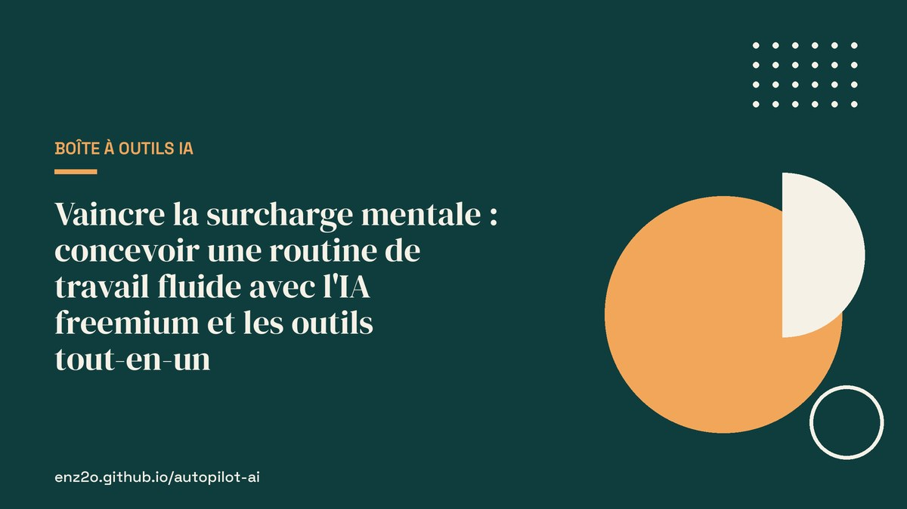
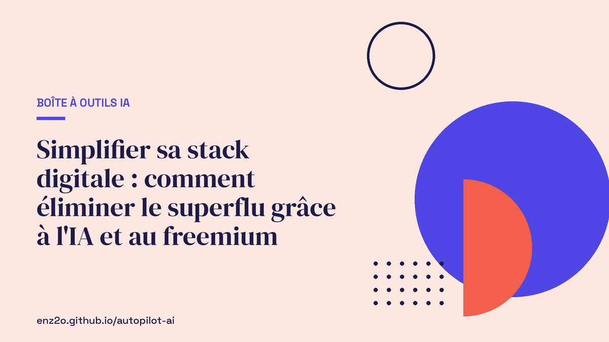
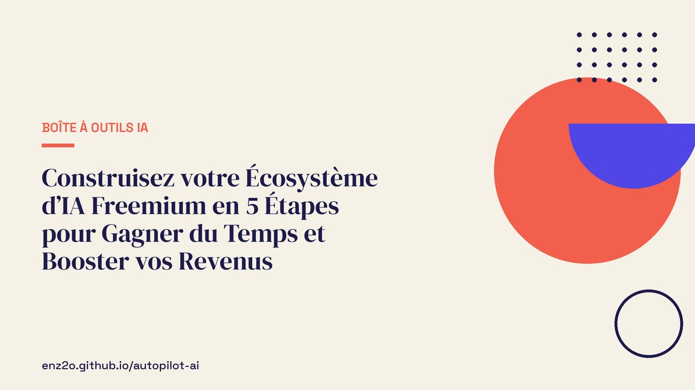
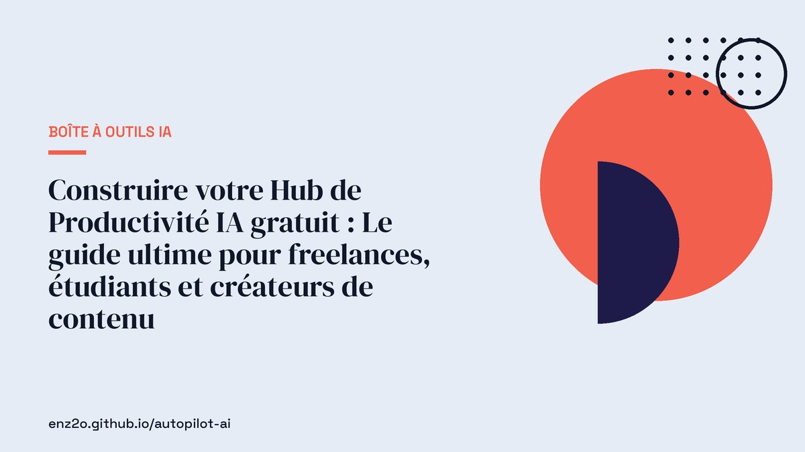
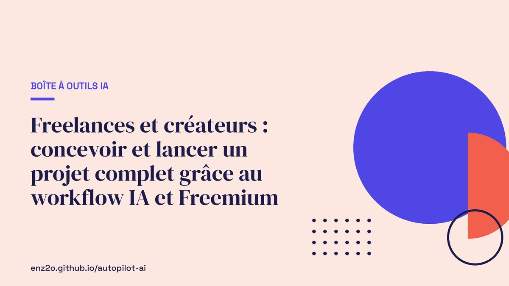

Expérience client et livraison : bâtir un workflow fluide à 0 € avec l'IA et le freemium
2026-11-19 · Découvrez comment professionnaliser vos propositions, cadrer vos projets et soigner votre livraison client grâce aux outils freemium et à l'IA gratuite.

Créer et distribuer son premier lead magnet en 3 heures : la méthode IA et freemium à 0 €
2026-11-19 · Découvrez comment concevoir, mettre en page et automatiser la livraison d'un aimant à prospects sans dépenser un euro grâce à l'IA et aux outils freemium.

Planifiez votre année de contenu en 5 étapes grâce aux IA gratuites et aux outils freemium
2026-11-19 · Apprenez à créer un calendrier éditorial 100 % gratuit avec l'IA, les outils freemium et un workflow qui libère du temps pour freelances, étudiants et créateurs

Construisez votre tableau de bord IA gratuit : centralisez vos projets et libérez du temps
2026-11-18 · Apprenez à créer un tableau de bord IA gratuit avec des outils freemium pour organiser vos projets, suivre vos tâches et gagner jusqu’à 5 h/semaine.

Transformer ses recherches en livrables concrets : la méthode IA et freemium pour ne plus s'éparpiller
2026-11-18 · Apprenez à structurer votre veille, synthétiser vos recherches et créer des livrables professionnels rapidement grâce aux outils d'IA freemium.

Dites adieu aux tâches ingrates : le système IA et freemium pour libérer 5 heures par semaine
2026-11-17 · Découvrez comment éliminer les micro-tâches chronophages grâce à un workflow IA et freemium pensé pour les freelances, étudiants et créateurs.

Vaincre la surcharge mentale : concevoir une routine de travail fluide avec l'IA freemium et les outils tout-en-un
2026-11-17 · Découvrez comment réduire la fatigue décisionnelle et centraliser votre travail grâce à une routine IA freemium simple, efficace et accessible.

Simplifier sa stack digitale : comment éliminer le superflu grâce à l'IA et au freemium
2026-11-17 · Trop d'outils tuent la productivité. Découvrez comment épuré votre stack de freelance ou créateur grâce à l'IA et des solutions freemium efficaces.

Du texte au réseau complet : le guide pour recycler ses contenus avec l'IA sans s'épuiser
2026-11-16 · Apprenez à transformer un contenu unique en plusieurs formats captivants grâce aux outils d'IA gratuits et bâtissez votre présence en ligne.

Construisez votre Écosystème d’IA Freemium en 5 Étapes pour Gagner du Temps et Booster vos Revenus
2026-11-16 · Apprenez à assembler un workflow IA gratuit ou freemium en 5 étapes simples, idéal pour freelances, étudiants et créateurs francophones.
L'art de déléguer à l'IA quand on travaille seul : guide pratique à 0 € de budget
2026-11-15 · Apprenez à déléguer vos tâches chronophages à des outils IA gratuits ou freemium. Un guide pratique pour freelances, étudiants et créateurs.

Construire votre Hub de Productivité IA gratuit : Le guide ultime pour freelances, étudiants et créateurs de contenu
2026-11-15 · Découvrez comment assembler des outils IA gratuits et freemium pour automatiser votre quotidien et gagner du temps sans dépenser un centime.

De l'idée à la première vente : le stack IA et freemium pour monétiser son expertise
2026-11-15 · Lancez votre activité freelance ou vos produits numériques sans budget grâce à un workflow basé sur des outils IA freemium simples et efficaces.

Freelances et créateurs : concevoir et lancer un projet complet grâce au workflow IA et Freemium
2026-11-15 · Apprenez à structurer votre workflow de production et de vente sans budget grâce aux meilleurs outils IA et logicels freemium pour freelances et créateurs.

Créateurs et freelances : comment automatiser son quotidien sans se ruiner (Guide Freemium & IA)
2026-11-15 · Découvrez comment optimiser votre temps avec les meilleurs outils freemium et l'IA. Un guide pratique et honnête pour freelances, étudiants et créateurs.

Travailler plus vite sans payer : bâtir son espace de travail IA 100 % gratuit
2026-11-15 · Marre d'accumuler les abonnements ? Découvrez comment structurer une routine de travail ultra-productive grâce aux meilleurs outils IA gratuits.

10 outils d’intelligence artificielle gratuits ou freemium pour gagner du temps
2026-11-15 · Découvrez 10 IA gratuites ou freemium qui boostent la productivité des freelances, étudiants et créateurs de contenu francophones.